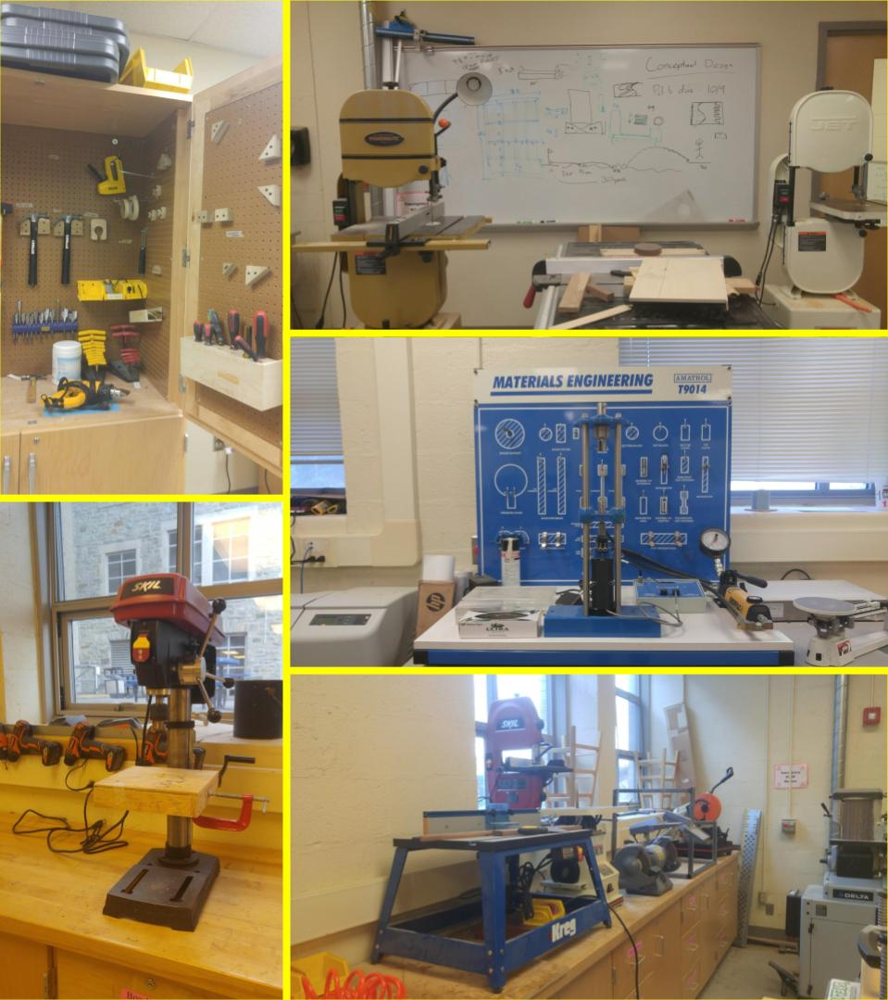

Engineering Courses
Introduction to Engineering (Grade 9 Requirement)
Meets 4 periods of the 6-day cycle
.66 Credit
This course provides an introduction to engineering and technology design processes.
Students create ideas, designs, develop innovations and engineer practical solutions.
It also provides students with the opportunity to apply technological concepts and processes in order to creatively
innovate designs. This course will utilize students’ Mathematics and Science skills from concept to production and evaluation
in all aspects of the processes.
Engineering Technology (Grade 10)*
Meets 4 periods of the 6-day cycle
.66 Credit
*Successful Completion of Intro to Engineering Recommended
Engineering Technology will offer students the opportunity to understand and apply the knowledge and skills
required to link science, technology, engineering, and mathematics together and apply it to solve problems. T
he course also provides students an opportunity to engage in real world case studies and learning activities that
focus on the engineering process and making the world a better place to live and work.
This course will maintain a focus on how engineers apply their creativity, resourcefulness, mathematical,
scientific, and technical knowledge, and skills in the creation or refinement of technological products and systems.
A key approach will be the use of a sequential and iterative design and development process to solve authentic engineering
tasks and problems.
IB Design Technology Year 1 Higher/Standard Level (Grade 11)
Meets 6 periods of the 6-day cycle
1.0 Credit
IB Design Technology Year 2 Higher/Standard Level (Grade 12)
Meets 6 periods of the 6-day cycle
1.0 Credit
IB design technology is based on a model of learning that incorporates knowledge, skills and design principles in problem-solving contexts, while at the same time maximizing the use of local and readily available resources. It assumes no previous experience in either technology or design. The intent is not solely the acquisition of knowledge about design and technology, which may change or become outdated, but it is about learning how to adapt to new experiences and to approach problems with the appropriate skills and the relevant techniques to identify the important elements and, crucially, to develop the optimum solutions. The design cycle is at the core of the course, and it is expected that students will use this process in practical investigative work as well as in the theory. Each element in the design cycle represents an aspect of design technology, which, when viewed together, constitutes a holistic approach. Any given element is therefore only to be seen in the context of the whole process.
Email jlong@dasd.org for more information, or talk to your guidance counselor.

Copyright © 2019 https://flyingtoucans.github.io